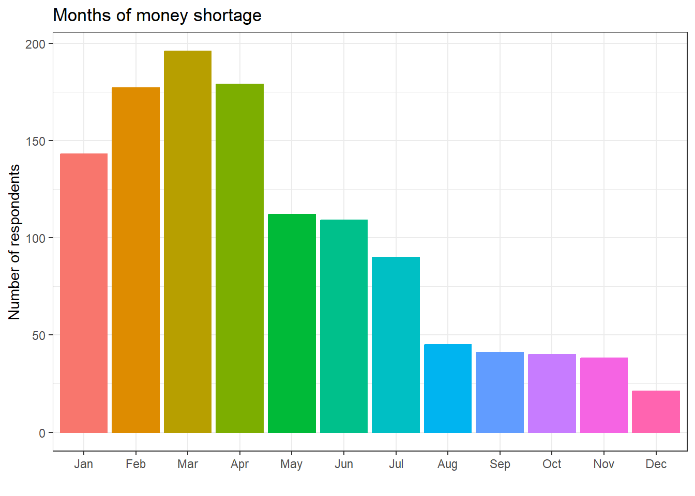

R markdown, Basic functions, Package (tidyverse) installation, Visualization using ggplot()
Author
Professor Dr. Md. Kamrul Hasan
Reading data sets
Before reading a dataset from a folder we need to make sure the dataset is in the working directory. We can set working directory using different methods:
Session > Set Working Directory …..
Typing command
Files tab in the Environment Pane
data = readxl::read_excel('DataSets.xlsx', sheet ='wrangling', range ='B7:N507')head(data)
sr. jan feb mar
Min. : 1.0 Min. :0.000 Min. :0.000 Min. :0.000
1st Qu.:125.8 1st Qu.:0.000 1st Qu.:0.000 1st Qu.:0.000
Median :250.5 Median :0.000 Median :0.000 Median :0.000
Mean :250.5 Mean :0.286 Mean :0.354 Mean :0.392
3rd Qu.:375.2 3rd Qu.:1.000 3rd Qu.:1.000 3rd Qu.:1.000
Max. :500.0 Max. :1.000 Max. :1.000 Max. :1.000
apr may jun jul aug
Min. :0.000 Min. :0.000 Min. :0.000 Min. :0.00 Min. :0.00
1st Qu.:0.000 1st Qu.:0.000 1st Qu.:0.000 1st Qu.:0.00 1st Qu.:0.00
Median :0.000 Median :0.000 Median :0.000 Median :0.00 Median :0.00
Mean :0.358 Mean :0.224 Mean :0.218 Mean :0.18 Mean :0.09
3rd Qu.:1.000 3rd Qu.:0.000 3rd Qu.:0.000 3rd Qu.:0.00 3rd Qu.:0.00
Max. :1.000 Max. :1.000 Max. :1.000 Max. :1.00 Max. :1.00
sep oct nov dec
Min. :0.000 Min. :0.00 Min. :0.000 Min. :0.000
1st Qu.:0.000 1st Qu.:0.00 1st Qu.:0.000 1st Qu.:0.000
Median :0.000 Median :0.00 Median :0.000 Median :0.000
Mean :0.082 Mean :0.08 Mean :0.076 Mean :0.042
3rd Qu.:0.000 3rd Qu.:0.00 3rd Qu.:0.000 3rd Qu.:0.000
Max. :1.000 Max. :1.00 Max. :1.000 Max. :1.000
We will subset the dataset by excluding the Sr. variable (1st variable)
ggplot(sums2)+aes(x = Months, y = Frequency, color = Months, fill = Months)+geom_col()+theme_bw()+labs(title ='Months of money shortage',x ='',y ='Number of respondents')+theme(legend.position ='')

ggsave('My plot.png', dpi =600, height =4, width =8, units ='in')